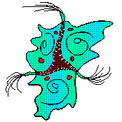

Anyway, as I was saying, I was inputting these severed cords into the correct doors when my eyes were pulled out of my face by a tall thing with seven arms. It was pretty painful, but then I remembered that I was saved by the queen of miracles before and I could always think about her miracle chest and I would be fine so then I was able to just regrow the eyes anyway, and that scared the thing with the seven arms and it ran away, but when it ran away it actually tripped over its own legs and it fell around 3000 years down into a pit filled with ravenous mouths and these very “stabby” looking creatures which in fact were very stabby because they stabbed the creature repeatedly until it burst into a cloud of red mist.
And then I thought, wait! Was that one of those crimson aliens? Was that what they really looked like beneath their suits?
It was strange, but I suddenly felt very sad to think about that. They were very nice, so maybe it had taken my eyes on purpose to make me remember about that chest, which was a very nice thing indeed to think about, and it made my insides feel very warm and tingly. But, did it know that it would trip and fall into the pit? Did it die because of me? In the dream, I wondered about that until I caught a glimpse of that mist once more.
Then it made sense. At least, in the dream it made sense. It died on purpose so that it could escape my dream. In that form it had taken to force my memory of that cute queen, it was too heavy to leave the dream. But once it died, and took the form of mist, it could finally reach the upper limits of the dream and escape to a different place.